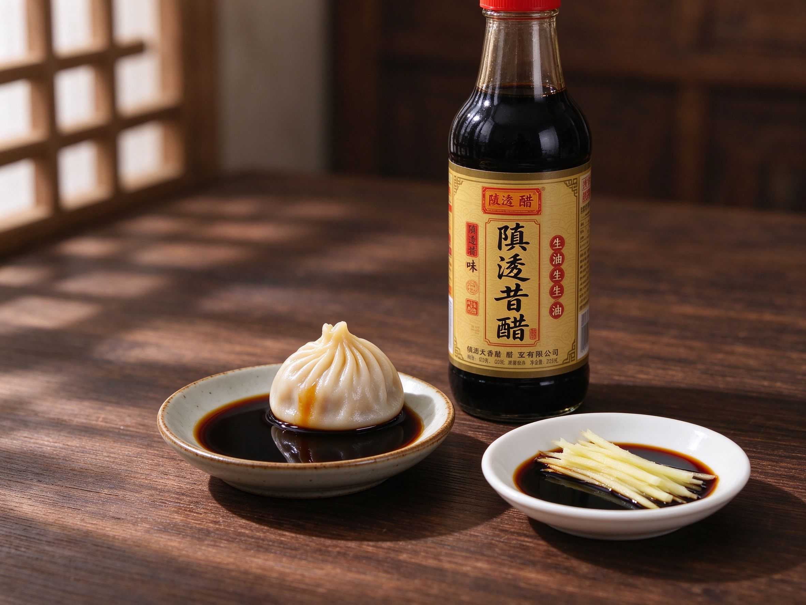

Black Vinegar (香醋): The Tangy Secret of Chinese Cooking
If soy sauce is salt and oyster sauce is umami, black vinegar is the bright, malty, slightly sweet tang that wakes everything else up. It's the vinegar in the little dish beside your dumplings, the backbone of hot and sour soup, and the finishing splash in countless braises. Yet most home cooks don't have it — and it's the cheapest, easiest upgrade you can make to your Chinese pantry.
What Is Chinese Black Vinegar?
Unlike pale white or balsamic vinegar, Chinese black vinegar is a dark, mellow, complex vinegar made by fermenting grains — typically glutinous rice, wheat, or sorghum. It has a gentle, rounded sourness with deep malty, almost smoky notes and a hint of sweetness, thanks to a long, slow aging process. It's closer in spirit to balsamic than to white vinegar: flavorful enough to stand alone as a dip.
Zhenjiang vs. Shanxi: The Two Big Styles
- Zhenjiang (chinkiang) vinegar — made from glutinous rice, slightly sweet, elegant, and less sharp. This is the one for dumpling and xiao long bao dipping, and the one most Chinese families keep on the table. Look for "镇江香醋" on the label.
- Shanxi aged vinegar — made mainly from sorghum and wheat, darker, more assertive, and more pungent, with a longer aging time. It's the classic for hot and sour soup, and for braises that need a firmer tang. Look for "山西老陈醋".
How to Pick a Good Bottle
- Look for "brewed" (酿造) on the label — this means real grain fermentation, not flavored vinegar with added acid.
- Check the age — most bottles note their aging (e.g., 3, 5, or 10 years). Older is smoother and more complex, but even a basic 3-year Zhenjiang is excellent.
- Read the ingredients — glutinous rice (for Zhenjiang) or sorghum/wheat (for Shanxi) should be at the top; sugar and colorants should be minimal or absent.
- Expect darkness — a deep, clear brown-black color is normal. It will look almost black in the bottle and a rich amber in the dish.
Where Black Vinegar Shines
Dipping sauces
The classic move: a small dish of black vinegar, sometimes with a thread of soy sauce or a few slices of ginger, for dumplings, soup dumplings, and spring rolls. The acidity cuts through rich fillings perfectly.
Hot and sour soup
That perfect balance of heat and tang comes from a generous splash of black vinegar added near the end — use a Shanxi style for the boldest result.
Braises and glazes
A spoonful in braised dishes, like hong shao rou or sweet and sour dishes, rounds out the sweetness and keeps the dish from cloying.
Storing and Substituting
Black vinegar keeps almost indefinitely in a cool, dark cupboard — no need to refrigerate. For a substitute in a pinch, use rice vinegar (or a light balsamic) plus a pinch of sugar; it won't have the same malty depth, but it will get you close. To round out the rest of your pantry, see our guides to soy sauce, oyster sauce, and doubanjiang.
One bottle of black vinegar quietly upgrades a whole shelf of Chinese cooking. Put it on the table beside the soy sauce, and watch how often you reach for it.